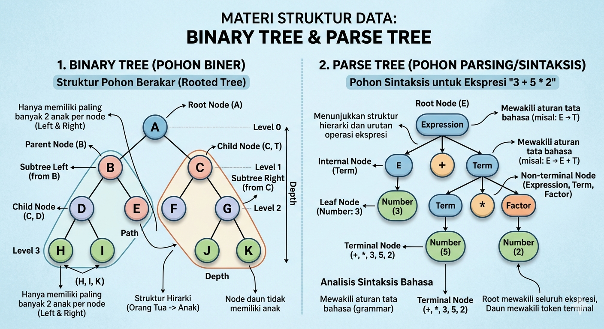

Tree
Treeadalah struktur data non-linear yang bentuknya menyerupai pohon terbalik. Jika pada ekosistem biologi akar ada di bawah, maka pada computer science akar (root) berada di posisi paling atas, sedangkan cabang (branches) dan daun (leaves) menjalar ke bawah.
Istilah penting pada Tree:
1. Node (Key): Komponen tree yang menyimpan informasi/nilai.
2. Edge: Garis penghubung antara satu node dengan node lainnya.
3. Root: Node teratas yang tidak memiliki cabang masuk.
4. Parent: Node yang memiliki cabang/anak yang keluar darinya.
5. Children: Node anak hasil turunan langsung dari suatu parent.
6. Siblings: Node-node yang berbagi parent yang sama.
7. Leaf Node (Daun): Node paling ujung bawah yang sudah tidak memiliki anak lagi
8. Subtree: Kumpulan node dan edge yang terdiri dari sebuah parent dan semua keturunannya.
Salah satu aplikasi nyata dari Binary Tree adalah menyelesaikan persamaan matematika berdasar tingkatan operator (operator precedence) dan tanda kurung. Aturan Pembentukan: Kurung buka ( membuat sub-tree baru di kiri, operator menjadi parent/root, angka/operand menjadi leaf node, dan kurung tutup ) menandakan kembali ke parent di atasnya. Karena dalam proses pembuatan kita harus bisa "kembali ke parent", kita membutuhkan bantuan struktur data Stack untuk mencatat jejak parent sebelumnya.

Implementasi Python:
Kode Program Binary Tree
class BinaryTree:
def __init__(self, root_val):
self.key = root_val
self.leftChild = None
self.rightChild = None
# Menyisipkan anak kiri
def insertLeft(self, new_node):
if self.leftChild == None:
self.leftChild = BinaryTree(new_node)
else:
# Jika sudah ada anak kiri, sisipkan di tengahnya
t = BinaryTree(new_node)
t.leftChild = self.leftChild
self.leftChild = t
# Menyisipkan anak kanan
def insertRight(self, new_node):
if self.rightChild == None:
self.rightChild = BinaryTree(new_node)
else:
# Jika sudah ada anak kanan, sisipkan di tengahnya
t = BinaryTree(new_node)
t.rightChild = self.rightChild
self.rightChild = t
def getRightChild(self):
return self.rightChild
def getLeftChild(self):
return self.leftChild
def setRootVal(self, obj):
self.key = obj
def getRootVal(self):
return self.key
import operator
def evaluate(parse_tree):
# Menyediakan dictionary fungsi matematika dasar
opers = {
'+': operator.add,
'-': operator.sub,
'*': operator.mul,
'/': operator.truediv
}
left = parse_tree.getLeftChild()
right = parse_tree.getRightChild()
# Jika node ini memiliki anak kiri dan kanan, berarti node ini adalah OPERATOR
if left and right:
fn = opers[parse_tree.getRootVal()]
# Selesaikan anak kiri dan kanan secara rekursif, lalu operasikan
return fn(evaluate(left), evaluate(right))
else:
# Base case: Jika tidak punya anak, berarti node ini adalah ANGKA (operand)
return parse_tree.getRootVal()